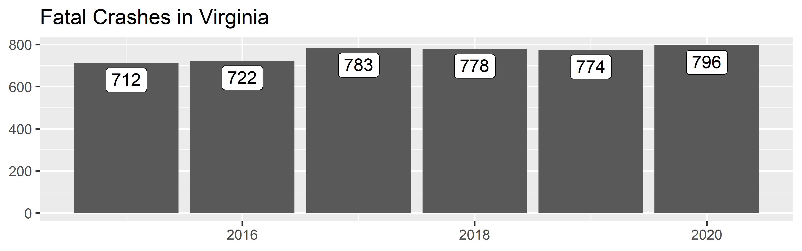

The goal of rfars is to simplify the process of analyzing FARS data. FARS stands for Fatality Analysis Reporting System, the census of fatal crashes in the United States maintained by the National Highway Traffic Safety Administration. The Fatality and Injury Reporting System Tool allows users to generate queries, and can produce simple tables and graphs. This suffices for simple analysis, but often leaves researchers wanting more. Digging any deeper, however, involves a time-consuming process of downloading annual ZIP files and attempting to stitch them together - after first combing through the immense data dictionary to determine the required variables and table names. rfars allows users to download FARS data back to 2015 with just one line of code. The result is a full, rich dataset ready for mapping, modeling, and other downstream analysis. Helper functions are also provided to produce common counts and comparisons.
A companion package rfarsplus (currently in development) will provide exposure data and facilitate the calculation of various rates.
Installation
You can install the latest version of rfars from GitHub with:
# install.packages("devtools")
devtools::install_github("s87jackson/rfars")Then load the required packages:
Getting and Using FARS Data
Use the get_fars() function to bring FARS data into the current environment. This is done by (a) downloading the data to a temporary directory, (b) downloading to a permanent directory, or (c) importing from a permanent directory. After data is downloaded to a permanent directory, the function will look there rather than downloading the data again. If a year of data is requested but not found, R will ask your permission to download the missing data.
Here we get three years of data for Virginia:
myFARS <- get_fars(years = 2018:2020, states = "VA")This returns a ‘FARS’ object: a list with five tibbles: flat, multi_acc, multi_veh, multi_per, and events.
The flat tibble contains all variables for which there is just one value per crash (“accident”), vehicle, or person (e.g., weather conditions, travel speed, age). Each row corresponds to a person involved in a crash. As there may be multiple people and/or vehicles involved in one crash, some variable-values are repeated within a crash or vehicle. Each crash is uniquely identified with id, which is a combination of year and st_case. Note that st_case is not unique across years, for example, st_case 510001 will appear in each year. The id variable attempts to avoid this issue.
The multi_ tibbles contain those variables for which there may be a varying number of values for any entity (e.g., driver impairments, vehicle events, weather conditions at time of crash). Each tibble has the requisite data elements corresponding to the entity: multi_acc includes st_case and year, multi_veh adds veh_no (vehicle number), and multi_per adds per_no (person number).
The events tibble provides a sequence of numbered events for each vehicle in each crash.
glimpse(myFARS)
#> List of 5
#> $ flat : tibble [5,259 × 194] (S3: tbl_df/tbl/data.frame)
#> ..$ year : num [1:5259] 2018 2018 2018 2018 2018 ...
#> ..$ state : chr [1:5259] "Virginia" "Virginia" "Virginia" "Virginia" ...
#> ..$ st_case : num [1:5259] 510001 510001 510001 510002 510002 ...
#> ..$ id : num [1:5259] 2.02e+09 2.02e+09 2.02e+09 2.02e+09 2.02e+09 ...
#> ..$ veh_no : num [1:5259] 1 1 1 1 2 0 1 1 1 2 ...
#> ..$ per_no : num [1:5259] 1 2 3 1 1 1 1 1 2 1 ...
#> ..$ county : chr [1:5259] "RICHMOND (760)" "RICHMOND (760)" "RICHMOND (760)" "PITTSYLVANIA (143)" ...
#> ..$ city : chr [1:5259] "RICHMOND" "RICHMOND" "RICHMOND" "NOT APPLICABLE" ...
#> ..$ lon : num [1:5259] -77.4 -77.4 -77.4 -79.4 -79.4 ...
#> ..$ lat : num [1:5259] 37.6 37.6 37.6 36.7 36.7 ...
#> ..$ ve_total : num [1:5259] 1 1 1 2 2 1 1 2 2 2 ...
#> ..$ ve_forms : num [1:5259] 1 1 1 2 2 1 1 2 2 2 ...
#> ..$ pvh_invl : num [1:5259] 0 0 0 0 0 0 0 0 0 0 ...
#> ..$ peds : num [1:5259] 0 0 0 0 0 1 1 0 0 0 ...
#> ..$ persons : num [1:5259] 3 3 3 2 2 1 1 3 3 3 ...
#> ..$ permvit : num [1:5259] 3 3 3 2 2 1 1 3 3 3 ...
#> ..$ pernotmvit : num [1:5259] 0 0 0 0 0 1 1 0 0 0 ...
#> ..$ day : num [1:5259] 1 1 1 3 3 3 3 2 2 2 ...
#> ..$ month : chr [1:5259] "January" "January" "January" "January" ...
#> ..$ day_week : chr [1:5259] "Monday" "Monday" "Monday" "Wednesday" ...
#> ..$ hour : num [1:5259] 16 16 16 7 7 20 20 12 12 12 ...
#> ..$ minute : num [1:5259] 15 15 15 30 30 34 34 10 10 10 ...
#> ..$ nhs : chr [1:5259] "This section IS NOT on the NHS" "This section IS NOT on the NHS" "This section IS NOT on the NHS" "This section IS NOT on the NHS" ...
#> ..$ route : chr [1:5259] "Local Street - Municipality" "Local Street - Municipality" "Local Street - Municipality" "State Highway" ...
#> ..$ tway_id : chr [1:5259] "VA-127" "VA-127" "VA-127" "SR-41 FRANKLIN TRPK" ...
#> ..$ tway_id2 : chr [1:5259] NA NA NA "GOLF CLUB RD" ...
#> ..$ rur_urb : chr [1:5259] "Urban" "Urban" "Urban" "Rural" ...
#> ..$ func_sys : chr [1:5259] "Major Collector" "Major Collector" "Major Collector" "Minor Arterial" ...
#> ..$ rd_owner : chr [1:5259] "City or Municipal Highway Agency" "City or Municipal Highway Agency" "City or Municipal Highway Agency" "State Highway Agency" ...
#> ..$ milept : chr [1:5259] "11" "11" "11" "35" ...
#> ..$ sp_jur : chr [1:5259] "No Special Jurisdiction" "No Special Jurisdiction" "No Special Jurisdiction" "No Special Jurisdiction" ...
#> ..$ harm_ev : chr [1:5259] "Tree (Standing Only)" "Tree (Standing Only)" "Tree (Standing Only)" "Motor Vehicle In-Transport" ...
#> ..$ man_coll : chr [1:5259] "Not a Collision with Motor Vehicle In-Transport" "Not a Collision with Motor Vehicle In-Transport" "Not a Collision with Motor Vehicle In-Transport" "Front-to-Front" ...
#> ..$ reljct1 : chr [1:5259] "No" "No" "No" "No" ...
#> ..$ reljct2 : chr [1:5259] "Non-Junction" "Non-Junction" "Non-Junction" "Intersection-Related" ...
#> ..$ typ_int : chr [1:5259] "Not an Intersection" "Not an Intersection" "Not an Intersection" "T-Intersection" ...
#> ..$ wrk_zone : chr [1:5259] "None" "None" "None" "None" ...
#> ..$ rel_road : chr [1:5259] "On Roadside" "On Roadside" "On Roadside" "On Roadway" ...
#> ..$ lgt_cond : chr [1:5259] "Daylight" "Daylight" "Daylight" "Daylight" ...
#> ..$ sch_bus : chr [1:5259] "No" "No" "No" "No" ...
#> ..$ rail : chr [1:5259] "Not Applicable" "Not Applicable" "Not Applicable" "Not Applicable" ...
#> ..$ not_hour : num [1:5259] 99 99 99 99 99 99 99 99 99 99 ...
#> ..$ not_min : num [1:5259] 99 99 99 99 99 99 99 99 99 99 ...
#> ..$ arr_hour : num [1:5259] 99 99 99 99 99 99 99 99 99 99 ...
#> ..$ arr_min : num [1:5259] 99 99 99 99 99 99 99 99 99 99 ...
#> ..$ hosp_hr : num [1:5259] 99 99 99 99 99 88 88 99 99 99 ...
#> ..$ hosp_mn : num [1:5259] 99 99 99 99 99 88 88 99 99 99 ...
#> ..$ fatals : num [1:5259] 1 1 1 1 1 1 1 1 1 1 ...
#> ..$ drunk_dr : num [1:5259] 0 0 0 0 0 0 0 0 0 0 ...
#> ..$ str_veh : num [1:5259] 0 0 0 0 0 1 0 0 0 0 ...
#> ..$ age : chr [1:5259] "23 Years" "22 Years" "19 Years" "29 Years" ...
#> ..$ sex : chr [1:5259] "Male" "Male" "Female" "Male" ...
#> ..$ per_typ : chr [1:5259] "Driver of a Motor Vehicle In-Transport" "Passenger of a Motor Vehicle In-Transport" "Passenger of a Motor Vehicle In-Transport" "Driver of a Motor Vehicle In-Transport" ...
#> ..$ inj_sev : chr [1:5259] "Suspected Minor Injury (B)" "Suspected Serious Injury (A)" "Fatal Injury (K)" "Suspected Serious Injury (A)" ...
#> ..$ seat_pos : chr [1:5259] "Front Seat, Left Side" "Second Seat, Left Side" "Front Seat, Right Side" "Front Seat, Left Side" ...
#> ..$ rest_use : chr [1:5259] "None Used / Not Applicable" "None Used / Not Applicable" "None Used / Not Applicable" "Shoulder and Lap Belt Used" ...
#> ..$ rest_mis : chr [1:5259] "No" "No" "No" "No" ...
#> ..$ air_bag : chr [1:5259] "Deployed- Front" "Not Deployed" "Not Deployed" "Deployed- Front" ...
#> ..$ ejection : chr [1:5259] "Not Ejected" "Not Ejected" "Not Ejected" "Not Ejected" ...
#> ..$ ej_path : chr [1:5259] "Ejection Path Not Applicable" "Ejection Path Not Applicable" "Ejection Path Not Applicable" "Ejection Path Not Applicable" ...
#> ..$ extricat : chr [1:5259] "Not Extricated or Not Applicable" "Not Extricated or Not Applicable" "Not Extricated or Not Applicable" "Not Extricated or Not Applicable" ...
#> ..$ drinking : chr [1:5259] "No (Alcohol Not Involved)" "Not Reported" "Not Reported" "No (Alcohol Not Involved)" ...
#> ..$ alc_det : chr [1:5259] "Not Reported" "Not Reported" "Not Reported" "Not Reported" ...
#> ..$ alc_status : chr [1:5259] "Test Not Given" "Test Not Given" "Test Not Given" "Test Not Given" ...
#> ..$ atst_typ : chr [1:5259] "Test Not Given" "Test Not Given" "Test Not Given" "Test Not Given" ...
#> ..$ alc_res : chr [1:5259] "Test Not Given" "Test Not Given" "Test Not Given" "Test Not Given" ...
#> ..$ drugs : chr [1:5259] "Reported as Unknown" "Not Reported" "Not Reported" "No (drugs not involved)" ...
#> ..$ drug_det : chr [1:5259] "Not Reported" "Not Reported" "Not Reported" "Not Reported" ...
#> ..$ dstatus : chr [1:5259] "Test Not Given" "Test Not Given" "Test Not Given" "Test Not Given" ...
#> ..$ hospital : chr [1:5259] "EMS Unknown Mode" "EMS Unknown Mode" "Not Transported" "EMS Unknown Mode" ...
#> ..$ doa : chr [1:5259] "Not Applicable" "Not Applicable" "Died at Scene" "Not Applicable" ...
#> ..$ death_da : chr [1:5259] "Not Applicable (Non-Fatal)" "Not Applicable (Non-Fatal)" "1" "Not Applicable (Non-Fatal)" ...
#> ..$ death_mo : chr [1:5259] "Not Applicable (Non-Fatal)" "Not Applicable (Non-Fatal)" "January" "Not Applicable (Non-Fatal)" ...
#> ..$ death_yr : chr [1:5259] "Not Applicable (Non-fatal)" "Not Applicable (Non-fatal)" "2018" "Not Applicable (Non-fatal)" ...
#> ..$ death_hr : num [1:5259] 88 88 16 88 8 20 88 12 88 88 ...
#> ..$ death_mn : num [1:5259] 88 88 20 88 45 40 88 39 88 88 ...
#> ..$ death_tm : chr [1:5259] "Not Applicable (Non-fatal)" "Not Applicable (Non-fatal)" "1620" "Not Applicable (Non-fatal)" ...
#> ..$ lag_hrs : num [1:5259] 999 999 0 999 1 0 999 0 999 999 ...
#> ..$ lag_mins : num [1:5259] 99 99 5 99 15 6 99 29 99 99 ...
#> ..$ work_inj : chr [1:5259] "Not Applicable (not a fatality)" "Not Applicable (not a fatality)" "No" "Not Applicable (not a fatality)" ...
#> ..$ hispanic : chr [1:5259] "Not A Fatality (not Applicable)" "Not A Fatality (not Applicable)" "Non-Hispanic" "Not A Fatality (not Applicable)" ...
#> ..$ location : chr [1:5259] "Occupant of a Motor Vehicle" "Occupant of a Motor Vehicle" "Occupant of a Motor Vehicle" "Occupant of a Motor Vehicle" ...
#> ..$ numoccs : chr [1:5259] "03" "03" "03" "01" ...
#> ..$ unittype : chr [1:5259] "Motor Vehicle In-Transport (Inside or Outside the Trafficway)" "Motor Vehicle In-Transport (Inside or Outside the Trafficway)" "Motor Vehicle In-Transport (Inside or Outside the Trafficway)" "Motor Vehicle In-Transport (Inside or Outside the Trafficway)" ...
#> ..$ hit_run : chr [1:5259] "No" "No" "No" "No" ...
#> ..$ reg_stat : chr [1:5259] "Virginia" "Virginia" "Virginia" "Virginia" ...
#> ..$ owner : chr [1:5259] "Driver (in this crash) was Registered Owner" "Driver (in this crash) was Registered Owner" "Driver (in this crash) was Registered Owner" "Driver (in this crash) was Registered Owner" ...
#> ..$ make : chr [1:5259] "Honda" "Honda" "Honda" "Honda" ...
#> ..$ model : num [1:5259] 32 32 32 32 2 NA 401 403 403 881 ...
#> ..$ mak_mod : chr [1:5259] "Honda Accord (Note: For Crosstour model years 2010 and 2011 only. For Crosstour model years 2012-2015, see vehi"| __truncated__ "Honda Accord (Note: For Crosstour model years 2010 and 2011 only. For Crosstour model years 2012-2015, see vehi"| __truncated__ "Honda Accord (Note: For Crosstour model years 2010 and 2011 only. For Crosstour model years 2012-2015, see vehi"| __truncated__ "Honda Accord (Note: For Crosstour model years 2010 and 2011 only. For Crosstour model years 2012-2015, see vehi"| __truncated__ ...
#> ..$ body_typ : chr [1:5259] "4-door sedan, hardtop" "4-door sedan, hardtop" "4-door sedan, hardtop" "4-door sedan, hardtop" ...
#> ..$ mod_year : chr [1:5259] "2005" "2005" "2005" "2003" ...
#> ..$ vin : chr [1:5259] "1HGCM66535A0" "1HGCM66535A0" "1HGCM66535A0" "1HGCM56333A0" ...
#> ..$ tow_veh : chr [1:5259] "No Trailing Units" "No Trailing Units" "No Trailing Units" "No Trailing Units" ...
#> ..$ j_knife : chr [1:5259] "Not an Articulated Vehicle" "Not an Articulated Vehicle" "Not an Articulated Vehicle" "Not an Articulated Vehicle" ...
#> ..$ mcarr_i1 : chr [1:5259] "Not Applicable" "Not Applicable" "Not Applicable" "Not Applicable" ...
#> ..$ mcarr_i2 : chr [1:5259] "Not Applicable" "Not Applicable" "Not Applicable" "Not Applicable" ...
#> ..$ mcarr_id : chr [1:5259] "Not Applicable" "Not Applicable" "Not Applicable" "Not Applicable" ...
#> ..$ v_config : chr [1:5259] "Not Applicable" "Not Applicable" "Not Applicable" "Not Applicable" ...
#> .. [list output truncated]
#> $ multi_acc:'data.frame': 4777 obs. of 5 variables:
#> ..$ state : chr [1:4777] "Virginia" "Virginia" "Virginia" "Virginia" ...
#> ..$ st_case: num [1:4777] 510001 510002 510003 510004 510005 ...
#> ..$ name : chr [1:4777] "weather" "weather" "weather" "weather" ...
#> ..$ value : chr [1:4777] "Not Reported" "Not Reported" "Not Reported" "Not Reported" ...
#> ..$ year : num [1:4777] 2018 2018 2018 2018 2018 ...
#> $ multi_veh:'data.frame': 47959 obs. of 6 variables:
#> ..$ state : chr [1:47959] "Virginia" "Virginia" "Virginia" "Virginia" ...
#> ..$ st_case: num [1:47959] 510001 510002 510002 510003 510004 ...
#> ..$ veh_no : num [1:47959] 1 1 2 1 1 2 1 1 1 1 ...
#> ..$ name : chr [1:47959] "vehiclesf" "vehiclesf" "vehiclesf" "vehiclesf" ...
#> ..$ value : chr [1:47959] "None" "None" "None" "None" ...
#> ..$ year : num [1:47959] 2018 2018 2018 2018 2018 ...
#> $ multi_per:'data.frame': 31896 obs. of 7 variables:
#> ..$ state : chr [1:31896] "Virginia" "Virginia" "Virginia" "Virginia" ...
#> ..$ st_case: num [1:31896] 510001 510001 510001 510002 510002 ...
#> ..$ veh_no : num [1:31896] 1 1 1 1 2 0 1 1 1 2 ...
#> ..$ per_no : num [1:31896] 1 2 3 1 1 1 1 1 2 1 ...
#> ..$ name : chr [1:31896] "race" "race" "race" "race" ...
#> ..$ value : chr [1:31896] "Not a Fatality (not Applicable)" "Not a Fatality (not Applicable)" "Black" "Not a Fatality (not Applicable)" ...
#> ..$ year : num [1:31896] 2018 2018 2018 2018 2018 ...
#> $ events :'data.frame': 8410 obs. of 7 variables:
#> ..$ state : chr [1:8410] "Virginia" "Virginia" "Virginia" "Virginia" ...
#> ..$ st_case : num [1:8410] 510001 510001 510002 510002 510002 ...
#> ..$ veh_no : num [1:8410] 1 1 1 1 2 1 1 2 1 1 ...
#> ..$ veventnum: num [1:8410] 1 2 1 2 1 1 1 1 1 2 ...
#> ..$ soe : chr [1:8410] "Ran Off Roadway - Right" "Tree (Standing Only)" "Cross Centerline" "Motor Vehicle In-Transport" ...
#> ..$ aoi : chr [1:8410] "Non-Harmful Event" "1 Clock Point" "Non-Harmful Event" "12 Clock Point" ...
#> ..$ year : num [1:8410] 2018 2018 2018 2018 2018 ...
#> - attr(*, "class")= chr [1:2] "list" "FARS"You can review the list of variables to help guide your analysis with:
View(fars_varnames)Counts
A first step in many transportation safety analyses involves counting the number of relevant crashes, fatalities, or people involved. counts() lets users specify what to count, where to count them (rural/urban and/or in specified states), who to include, which years to include and an aggregation interval (annually or monthly), and factors involved in the crash. It returns a simple tibble that can be easily piped into ggplot() to quickly visualize counts.
counts(
myFARS,
what = "crashes",
interval = c("year")
) %>%
ggplot(aes(x=date, y=n, label=scales::comma(n))) +
geom_col() +
geom_label(vjust=1.2) +
labs(x=NULL, y=NULL, title = "Fatal Crashes in Virginia")
counts(
myFARS,
what = "fatalities",
interval = c("year")
) %>%
ggplot(aes(x=date, y=n, label=scales::comma(n))) +
geom_col() +
geom_label(vjust=1.2) +
labs(x=NULL, y=NULL, title = "Fatalities in Virginia")
counts(myFARS,
what = "fatalities",
where = "rural",
interval = c("year")
) %>%
ggplot(aes(x=date, y=n, label=scales::comma(n))) +
geom_col() +
geom_label(vjust=1.2) +
labs(x=NULL, y=NULL, title = "Rural Fatalities in Virginia")
counts(myFARS,
what = "fatalities",
where = "rural",
interval = c("year"),
involved = "speeding"
) %>%
ggplot(aes(x=date, y=n, label=scales::comma(n))) +
geom_col() +
geom_label(vjust=1.2) +
labs(x=NULL, y=NULL, title = "Speeding-Related Fatalities in Rural Virginia")
We can combine two counts() results to make a comparison. Here we compare the number of speeding-related fatalities in rural and urban Virginia:
bind_rows(
counts(myFARS,
what = "fatalities",
where = "rural",
interval = c("year"),
involved = "speeding"
) %>%
mutate(where = "Rural"),
counts(myFARS,
what = "fatalities",
where = "urban",
interval = c("year"),
involved = "speeding"
) %>%
mutate(where = "Urban")
) %>%
ggplot(aes(x=date, y=n, label=scales::comma(n))) +
geom_col() +
geom_label(vjust=1.2) +
facet_wrap(.~where) +
labs(x=NULL, y=NULL, title = "Speeding-Related Fatalities in Virginia", fill=NULL)
Mapping
We can take advantage of having access to the full data with maps. Here we map pedestrian and bicyclist fatalities in Virginia:
counts(
myFARS,
what = "crashes",
involved = "pedbike",
filterOnly = TRUE
) %>%
leaflet() %>%
addTiles() %>%
addHeatmap(group = "Heatmap", radius=10, blur=20, minOpacity = .01, max = .2, cellSize = 1) %>%
addCircleMarkers(
radius = 1,
color = "red",
stroke = FALSE,
fillOpacity = 0.7, group = "Crash Locations")
#> Assuming "lon" and "lat" are longitude and latitude, respectively
#> Assuming "lon" and "lat" are longitude and latitude, respectively
Drug-related crashes:
counts(
myFARS,
what = "crashes",
involved = "drugs",
filterOnly = TRUE
) %>%
filter(!is.na(lat), !is.na(lon)) %>%
leaflet() %>%
addTiles() %>%
addHeatmap(group = "Heatmap", radius=10, blur=20, minOpacity = .01, max = .2, cellSize = 1) %>%
addCircleMarkers(
radius = 1,
color = "red",
stroke = FALSE,
fillOpacity = 0.7, group = "Crash Locations")
#> Assuming "lon" and "lat" are longitude and latitude, respectively
#> Assuming "lon" and "lat" are longitude and latitude, respectively
Young drivers:
counts(
myFARS,
what = "crashes",
involved = "young driver",
filterOnly = TRUE
) %>%
filter(!is.na(lat), !is.na(lon)) %>%
leaflet() %>%
addTiles() %>%
addHeatmap(group = "Heatmap", radius=10, blur=20, minOpacity = .01, max = .2, cellSize = 1) %>%
addCircleMarkers(
radius = 1,
color = "red",
stroke = FALSE,
fillOpacity = 0.7, group = "Crash Locations")
#> Note: Young drivers are defined as those between the ages of 15 and 20.
#> Warning in mask$eval_all_mutate(quo): NAs introduced by coercion
#> Assuming "lon" and "lat" are longitude and latitude, respectively
#> Assuming "lon" and "lat" are longitude and latitude, respectively
Modeling
Having access to the full dataset also allows us to develop statistical models. Here we fit a simple model of injury severity as a function of age and restraint use. The results indicate that injury severity increases with age, and when seat belts are not used properly.
# table(myFARS$flat$inj_sev)
# table(myFARS$flat$rest_use, useNA = "ifany")
# table(myFARS$flat$per_typ, useNA = "ifany")
model_data <-
myFARS$flat %>%
filter(rest_use %in% c("Lap Belt Only Used",
"Shoulder Belt Only Used",
"None Used / Not Applicable",
"None Used/Not Applicable",
"Shoulder and Lap Belt Used"),
per_typ %in% c("Driver of a Motor Vehicle In-Transport",
"Passenger of a Motor Vehicle In-Transport")
) %>%
mutate(
rest_use = case_when(
rest_use %in% c("Lap Belt Only Used", "Shoulder Belt Only Used") ~ "Partial",
rest_use %in% c("None Used / Not Applicable", "None Used/Not Applicable") ~ "None",
rest_use %in% c("Shoulder and Lap Belt Used") ~ "Full",
TRUE ~ "Unknown"
) %>%
as.factor() %>%
relevel(ref = "Full"),
kabco = case_when(
inj_sev == "Fatal Injury (K)" ~ 4,
inj_sev %in% c("Suspected Serious Injury (A)",
"Suspected Serious Injury(A)") ~ 3,
inj_sev %in% c("Suspected Minor Injury (B)",
"Suspected Minor Injury(B)") ~ 2,
inj_sev == "Possible Injury (C)" ~ 1,
inj_sev == "No Apparent Injury (O)" ~ 0,
TRUE ~ as.numeric(NA)
),
age_n = gsub("\\D+","", age) %>% as.numeric())
my_model <- lm(kabco ~ age_n + rest_use, data = model_data)
stargazer::stargazer(my_model, type = "html")| Dependent variable: | |
| kabco | |
| age_n | 0.009*** |
| (0.001) | |
| rest_useNone | 1.474*** |
| (0.042) | |
| rest_usePartial | 0.520** |
| (0.222) | |
| Constant | 1.702*** |
| (0.053) | |
| Observations | 4,301 |
| R2 | 0.224 |
| Adjusted R2 | 0.224 |
| Residual Std. Error | 1.338 (df = 4297) |
| F Statistic | 414.442*** (df = 3; 4297) |
| Note: | p<0.1; p<0.05; p<0.01 |
new_data <- expand.grid(
age_n = c(20, 60),
rest_use = factor(c("Full", "Partial", "None"), levels = c("Full", "Partial", "None"), ordered = TRUE) )
new_data %>%
mutate(pred = predict(my_model, newdata = new_data),
age = paste0(age_n, " yrs")) %>%
ggplot(aes(x=rest_use, y=pred)) +
geom_col() +
facet_wrap(.~age) +
scale_y_continuous(
limits = c(0,4), breaks = 0:4, labels = c("O", "C", "B", "A", "K"), expand = expansion()) +
theme(panel.grid = element_blank(),
panel.grid.major.y = element_line(c("black")),
axis.ticks = element_blank()) +
labs(x="", y="", title = "Predicted Injury Severity by Age and Restraint Use",
caption = "Full = correctly used seatbelt, partial = partially correctly used, none = no seatbelt.")